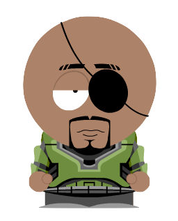
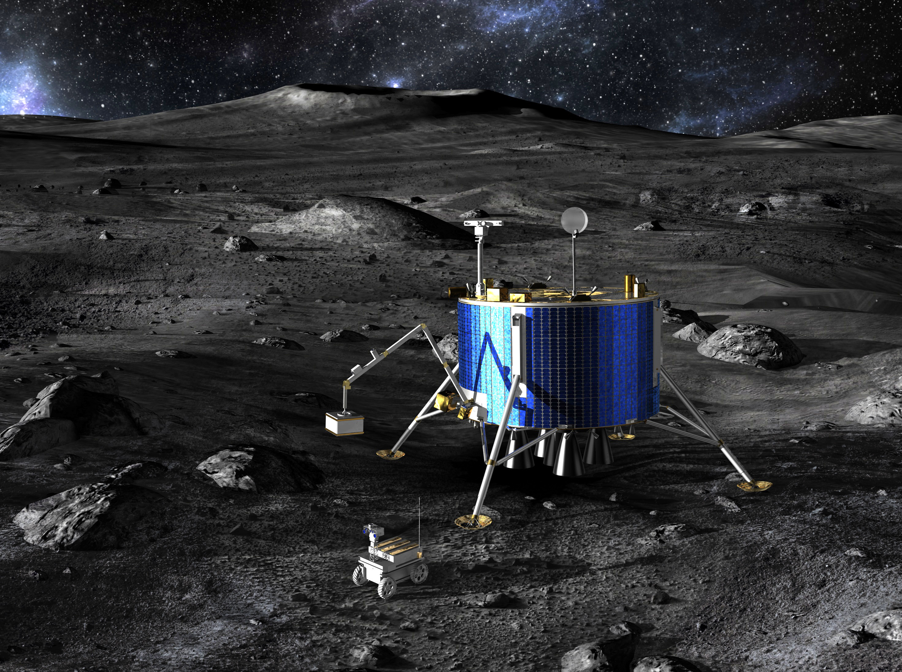

Welcome to VEEPs
So you're the new engineer? Welcome aboard. This project will soon have visibility all the way up, and it is important that we don't mess up and loose any RVs.
What? You don't know what is an RV? Didn't the kids down at headquarters brief you on your mission and duties? Don't worry, I'll do their job, but I'm not doing yours, okay?
We have spent millions creating and launching robotic probes through every known worm hole in the solar system. The probes gave us a list of exoplants to explore, and now we've spent billions creating and launching robotic vehicles to do the work of investigating and exploring these planets. We call them RVs for short.
Each RV has a base station with an energy generator, so it is very important that they return back to their base before they run out of energy. This is also the only place where they can communicate.
Each day, we send it their daily mission. We wait until it returns and sends us the results. And this is where your mission comes into play. We give you a mission, and you translate that to the RV. Got it?
If I told you to scratch your head, you could probably do it without any more information, but RVs aren't that sophisticated… at least, not now. You will need to be more precise. But I understand you engineers think that is fun.
Since you are just starting, I'm going to give you an RV that is actually sitting in a warehouse in downtown New Houston. That way, if you mess up, we can carry the RV over to its base station.
Base Station? Lots of power is required to communicate through worm holes so only the base station sends signals. The RVs can only talk to us if they are connected to the base station. So when you send an RV on a mission, make sure it comes back. Otherwise, it is lost.
I'll check in with you from time to time, but you'll be working with M. She's the best engineering trainer, and has personally been developing the RV's brain, so you should be up to speed in no time.